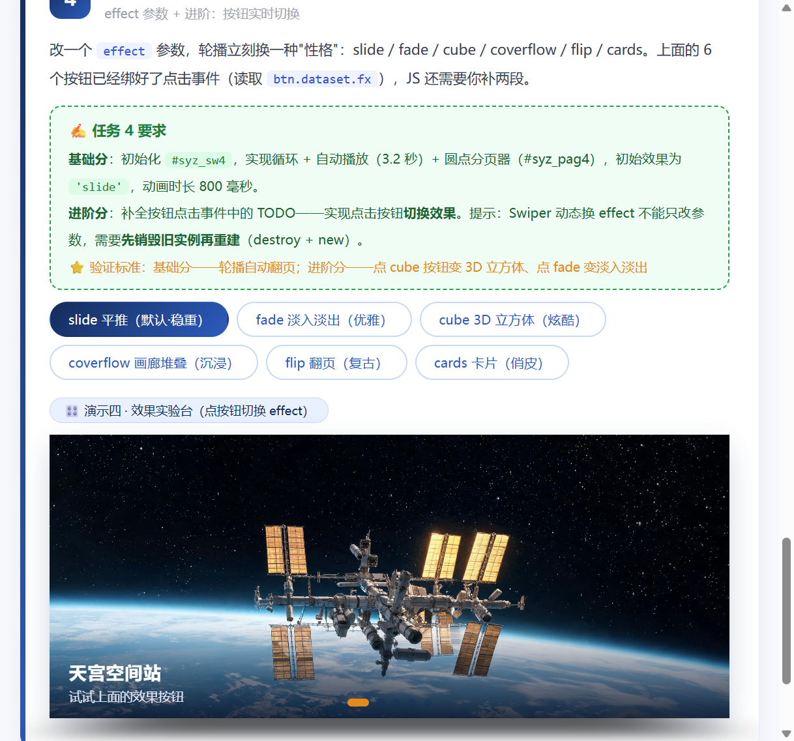
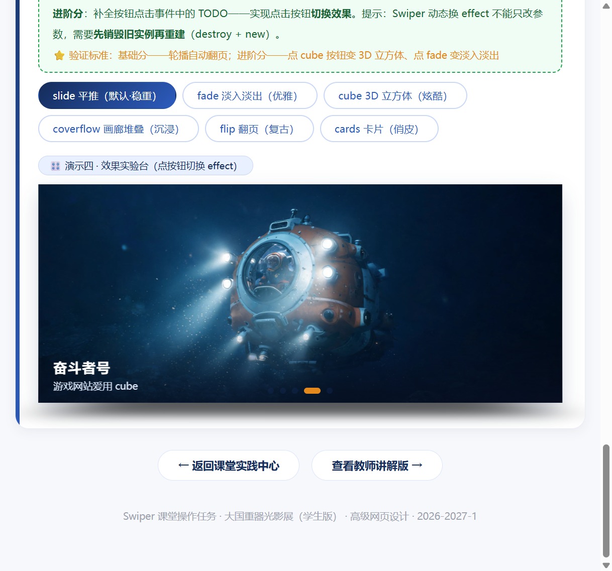

Swiper 轮播组件 · 大国重器光影展（学生版）
HTML 骨架和 CSS 样式已经全部搭好，图片也备齐了——但这个页面的轮播一个都不会动！ 因为所有 <script> 里的 JS 初始化代码都被抽走了。你的任务：把 4 个轮播全部"救活"。
① Swiper 组件库已通过 CDN 引入（页面第 8、9 行），不需要再写引入代码；
② 每个"演示台"下面的绿色卡片就是该任务的要求，JS 代码统一写在页面最底部的
<script> 区域内；③ 每完成一个任务就刷新页面验证：能拖、能点、会自己翻，才算通过；
④ 控制台（F12）报错是你要最好的朋友——先读报错，再改代码。
🎯 任务一 · 一句大白话换不来精确配置：两轮提问的实录
研究对象是第四个演示台 #syz_sw4 · 提示词前后改了两版 · 每版都亲手粘进页面跑过 · 截图放到最后这一章不写页面代码，只练一件事：把脑子里想要的效果，拆成 AI 能照着填的参数。下面按时间顺序记——先摊开验收清单，再看第一版提示词怎么问、它交回来的东西差在哪，然后把缺的信息写进第二版，最后对着页面逐条核。
📋 第 0 步 · 动手之前，先把 4 条验收标准写死
| 编号 | 我想要的画面 | 落到哪个参数上 |
|---|---|---|
| 1 | 第六张往后翻能接回第一张，中间看不出接缝 | loop: true |
| 2 | 一张停 3.2 秒；我用手拖过一次之后，它照旧自己往下翻 | autoplay.delay: 3200 与 disableOnInteraction: false |
| 3 | 圆点长在第四台自己身上，点第几个就跳第几张 | pagination.el: '#syz_pag4' 与 clickable: true |
| 4 | 页面一打开就是立体的立方体翻转 | effect: 'cube' |
① 第一轮 · 我说得笼统，它答得也笼统
它交回来的配置
new Swiper('#syz_sw4', {
loop: true,
autoplay: true, // ❌ 只丢了个 true：间隔走默认 3000，而且一拖就永久停
pagination: {
el: '.swiper-pagination' // ❌ 类名一给，抓到页面上第一个圆点容器；clickable 也忘了
},
effect: 'cube'
})| 我在意的那一条 | 页面上的实际表现 | 差在哪 |
|---|---|---|
| ① 首尾相接 | ✅ 过关 | 翻到最后还能接着回第一张，看不出断点 |
| ② 3.2 秒，拖完继续 | ❌ 没过 | 掐表是 3 秒一张；手一拖再松，它就彻底不动了 |
| ③ 本台圆点可点 | ❌ 没过 | 圆点跑到第一个演示台底下去了，第四台是空的；就算有也点不动 |
| ④ 一进来就是 cube | ✅ 过关 | 这条算蒙对了，确实是立方体翻转 |
② 第二轮 · 我往提示词里补了三样东西
delay: 3200，顺手补上 disableOnInteraction: false；二、交代页面有四个轮播，圆点必须用 id
#syz_pag4 点名，不许拿默认类名去猜；三、把输出框死：Swiper 11、只交 JS、HTML 一行都不许动。
第二版提示词（参数照抄，不留发挥余地）
它第二次交回来的配置
var syz_sw4Swiper = new Swiper('#syz_sw4', {
loop: true,
autoplay: {
delay: 3200, // 3.2 秒，数字写死
disableOnInteraction: false // 手拖之后接着走
},
pagination: {
el: '#syz_pag4', // id 只认第四台
clickable: true // 圆点能点
},
effect: 'cube',
speed: 800
});最终逐条核对
| 编号 | 这次看到的现象 | 判定 |
|---|---|---|
| 1 | 一直往后翻不断档，第六张之后自然接回第一张 | ✅ 过 |
| 2 | 停 3.2 秒换一张；拖完松手它接着自己翻 | ✅ 过 |
| 3 | 圆点出现在第四台下方，点第 3 个马上跳到第 3 张 | ✅ 过 |
| 4 | 刷新后第一眼就是立方体翻转 | ✅ 过 |
📷 截图存证 · 演示四 #syz_sw4 的两帧画面


❓ 老师可能会追问
第一轮为什么故意写得那么含糊，这不是给 AI 挖坑吗
不是挖坑，是留个对照。只用大白话问一次，才知道哪些词它压根翻译不成参数——"三秒多"它只能给默认的 3000，"带圆点"它不知道圆点该长在哪。有了这版反面样本，第二版补的地方才有依据。
分页器为什么非得写 id，写类名不行吗
不行。四个演示台的分页器共用同一个类名 .swiper-pagination，写类名 Swiper 会按文档顺序抓第一个，结果圆点全跑到第一台底下去了。换成 #syz_pag4 就只锁定这一个容器。
3.2 秒直接写 3.2 不行吗，非要写 3200
不行，delay 收的单位是毫秒。写 3.2 会被当成 3.2 毫秒，画面快到什么都看不清；3200 才是 3.2 秒。
🎬 任务二 · 自己搭一面电影墙：creative 的 prev / next 怎么调
课堂 6 种效果之外的第 7 种 · 按钮组末尾那个「creative 电影墙」· 参数按"参数 → 取值 → 眼睛看到的效果"逐行拆前六个 effect 都是现成的动画，名字一填就动；creative 不一样，它只留两个空位——上一张站哪、下一张站哪，剩下的自己填。我在演示四的按钮组尾巴上加了一个按钮，点下去走的老流程：先 destroy(true, true) 拆掉旧实例，再 new Swiper 重建，只是重建时多塞一段 creativeEffect。
🖼️ 先看它长什么样：一句话，左小右大、中间不动
prev：translate -45% ｜ z -300 ｜ scale 0.85 ｜ opacity 0.85 ｜ 绕 Y 轴 +35°
next：translate +55% ｜ z +150 ｜ scale 1.08 ｜ 绕 Y 轴 -20°
💻 写进 syz_sw4Config 的那一段（只有 effect 是 creative 才会加）
creativeEffect: {
limitProgress: 2, // 前后各一张都参与变形
prev: { // 退场那一张的姿态
shadow: true,
origin: 'left center', // 支在左中，像门板往外拉开
translate: ['-45%', 0, -300],
rotate: [0, 35, 0],
scale: 0.85,
opacity: 0.85
},
next: { // 入场那一张的姿态
shadow: true,
origin: 'right center',
translate: ['55%', 0, 150],
rotate: [0, -20, 0],
scale: 1.08
}
}📊 逐行拆开：每个参数对应眼睛里看到的什么
| 参数 | 取值 | 想让人眼看到的效果 |
|---|---|---|
| translate | prev：['-45%', 0, -300]next： ['55%', 0, 150] |
三个数依次是 x、y、z。x 上的百分比是相对幻灯片自己的宽度算的，不是屏幕宽。真正造出"近大远小"的是 z：正数把画面往观众这边拉、看着变大，负数往屏幕深处推、看着变小。所以 prev 先左移 -45% 再退 -300，整个人缩到后面去；next 从右边 +55% 起步，再往前 +150，直接怼到眼前。 |
| rotate | prev：[0, 35, 0]next： [0, -20, 0] |
同样三个数，对应 x、y、z 三个轴。这里只有中间那个有值，也就是 rotate[1]——绕竖直的 Y 轴转，画面会像贴在门上往左或往右侧过去，而不是前后翻跟头。prev 正转 35°、next 反转 20°，一里一外，左右不打架。 |
| scale | prev：0.85next： 1.08 | 在 z 位移之外再补一刀：退场的缩到 85% 显得更远，入场的放到 108% 显得更近，一退一进，纵深就出来了。 |
| opacity | prev：0.85next：不写，默认 1 | 退场那张压暗一点，暗示它已经不是主角；入场那张保持全亮，等着接位。 |
| origin | prev：'left center'next： 'right center' | 变形的支点放哪儿。prev 支在左中，缩放旋转都往左边张开；next 支在右中，从右边收进来，两面像一堵墙的左右两端。 |
🗣️ 换成我自己的话：这两个姿态各管一头
next 管的是"上场"。马上要来的那张，从右边 55% 的位置起步，z 往前 150px，视觉上就是朝观众扑过来变大；同时反向侧转 20°、放大到 1.08，像有人从右边把新海报递到你脸前。
两边都得写。往前翻的时候，旧的一张按 prev 退、新的一张按 next 进；往回翻时角色互换，同一套数值被反着用。少写一边，那一侧的画面就只能硬切，整面墙立刻塌掉。
🧪 点了一圈之后记下的结果
| 我做的动作 | 屏幕上出现的现象 | 判断 |
|---|---|---|
| 点按钮组第 7 个 | 按钮自己亮起来，轮播立刻换成电影墙的排布 | ✅ 正常 |
| 按一次下一张 | 原来那张左移、后退、缩小、压暗，并且侧着倒向左边 | ✅ 正常 |
| 再按一次下一张 | 新的一张带着角度从右侧靠近，最后停在正中并放大到位 | ✅ 正常 |
| 整体观感 | 中间正、左后一张小而歪、右前一张大而亮，像三张海报错落摆着 | ✅ 正常 |
| 切回 fade / cube | 没有残留的倾斜和内联样式，效果切得干干净净 | ✅ 正常 |
❓ 老师可能会追问
prev 和 next 为什么都要写，只写 next 不行吗
不行。prev 是"旧的一张怎么退"，next 是"新的一张怎么进"，管的是两个不同的位置。只写 next 的话，往下一张走时旧图没有退场姿态，会凭空消失，画面要顿一下。
translate 里那个 300 和 150 是什么单位，起什么作用
像素，作用在 z 轴上，也就是"离观众多远"。正数往观众这边靠、看着变大；负数往屏幕里推、看着变小。一张 -300 一张 +150，纵深差就是这么拉出来的。
x 写百分比的话，是相对谁的百分比
相对幻灯片自己的宽。所以 -45% 是"把自己往左挪出将近半张自己的宽度"，换到大屏小屏比例都一样，比写死像素稳得多。
🚢 任务三 · 补齐第六件展品，再给它配一个别人没有的手势
爱达·魔都号进 4 个演示台 · 圆点从 5 个变 6 个 · 超纲能力最后定成 zoom 双击放大（装在演示二）· 附中途换方案的全过程这一章分两段：先把展品摆齐——爱达·魔都号，我国第一艘自己造的大型邮轮，2024 年 1 月 1 日跑的商业首航，图用 swiper-imgs/adora_1.png（横版 16:9）；再从课堂没讲过的能力里挑一个装上，顺便讲讲我为什么中途把方案换了。
🛳️ 第一段 · 先把第六件展品放进去
四个演示台都要加，而且不能另起一套样式——直接沿用前五张的老结构：.swiper-slide 里一张 img，再叠一层 .syz_cap（h3 标题加一句说明）。四台各多一张之后，底下的圆点自己就从 5 个变成 6 个，分页器一行都不用改。
<div class="swiper-slide">
<img src="swiper-imgs/adora_1.png" alt="爱达·魔都号">
<div class="syz_cap">
<h3>爱达·魔都号</h3>
<p>国产首艘大型邮轮，2024 年 1 月 1 日商业首航</p>
</div>
</div>🔍 第二段 · 超纲能力：换了两次，才落定 zoom
它给的 keyboard: true 确实能翻，可我这页又长、又站着四个轮播，按方向键的时候不管在看哪一段，都在偷偷翻演示一。追问之后补了 onlyInViewport: true，才算老实。功能是通了，但交作业那天发现班里一大半人都写的 keyboard，几个人并排一按，动作一模一样。
zoom: {
maxRatio: 3, // 最多放到 3 倍
minRatio: 1, // 收回时回到原始大小
toggle: false // 双击由我自己接管，别让内置手势再抢一次
}
document.querySelector('#syz_sw2').addEventListener('dblclick', function (e) {
if (!e.target.closest('.swiper-zoom-container img')) return;
swiper2.zoom.scale > 1 ? swiper2.zoom.out() : swiper2.zoom.in();
});<div class="swiper-zoom-container">，Swiper 找不到能缩放的对象，事件等于白接；二是把希望全押在 toggle 上，可它对我这种鼠标双击压根不响应——实测双击前后 transform 都是 1 倍。最后的做法：图一张张包进 zoom 容器，toggle 干脆关掉，自己绑 dblclick 调 zoom.in() / zoom.out()，改完实测 1 倍 → 3 倍 → 1 倍。
| 关键项 | 我最后写成的 | 它负责什么 |
|---|---|---|
| zoom.maxRatio | 3 | 双击后最多放到原图 3 倍，再大就糊了 |
| zoom.minRatio | 1 | 收回时停在原始比例，不会缩成一小点 |
| zoom.toggle | false | 内置双击判定对鼠标不灵，关掉它，改走下面的手动方案 |
| HTML 结构 | <div class="swiper-zoom-container"> 包住 img | 给 Swiper 一个专门负责变换的壳，缺了它双击完全无效 |
| dblclick 处理 | zoom.in() / zoom.out() 二选一 | 按当前 zoom.scale 判断该放大还是收回，一次双击只做一件事 |
🧪 全部改完后的自检记录
| 检查的点 | 看到的情况 | 结论 |
|---|---|---|
| 四个台子里有没有第六张 | 四台都是 6 张，新展品的结构和前五张完全一致 | ✅ 有 |
| 圆点数量 | 演示二、三、四的圆点从 5 个变 6 个，跟着幻灯片数量走 | ✅ 对 |
| 演示二双击图片 | 图片原地放大，按住可以拖着看细节 | ✅ 灵 |
| 再双击一次 | 缩回原始比例，画面位置不跑偏 | ✅ 灵 |
| 另外三个台子 | 没被 zoom 影响，拖动、圆点、箭头、7 种效果都照旧 | ✅ 正常 |
❓ 老师可能会追问
keyboard 那版明明能跑，为什么最后换成 zoom 了
能用，但撞得太狠。班上一半人交的都是 keyboard，老师挨个点开看基本是同一个动作；而且键盘控制跟"看展"这件事关系不大。zoom 是拿手指往画面上凑，双击就放大，跟看实物展品的感觉更近，也没人跟我重样。
双击没反应，一般是哪儿没写对
先查结构再查参数：图片外面有没有 .swiper-zoom-container 这层壳，少了它 Swiper 根本找不到可缩放的东西；壳有了还是没反应，就别再指望内置的 toggle，自己绑一个 dblclick 调 zoom.in() 最稳。我这次两样全踩了，所以第一次双击完全像没接上。
放大之后还能拖到下一张吗
放大状态下拖，是在图里平移看细节，这时候不会翻页；双击还原成原始比例以后，往左往右拖就又变回切换幻灯片了。想边看边翻，得先收回去。
救活最小轮播三行 JS · 让照片可以拖动
下面是"最小轮播"骨架：三层结构齐全，但因为没有初始化，照片僵在第一张。请写出初始化代码，让它至少可以按住拖动。
✍️ 任务 1 要求
在页面底部 <script> 中初始化 #syz_sw1，让它成为可拖动的轮播（最基础写法，一个空配置对象即可）。

天宫空间站
2022 年全面建成 · 中国人的太空家园

复兴号动车组
350 km/h · 世界商业运营最高时速

C919 大飞机
2023 年商业首航 · 国产干线客机翱翔蓝天

奋斗者号
10909 米 · 触碰地球第四极马里亚纳海沟

中国天眼 FAST
500 米口径 · 世界最大单口径射电望远镜
装上遥控器pagination 圆点 + navigation 箭头
HTML 里已经埋好了三个"遥控器"元素：#syz_pag2（圆点）、#syz_prev2 / #syz_next2（左右箭头）。请通过配置让它们"通电"。
✍️ 任务 2 要求
初始化 #syz_sw2，实现 4 个效果：① 无缝循环（loop）② 切换动画时长 600 毫秒（speed）③ 圆点分页器且可点击跳转（pagination，别漏 el）④ 两侧箭头可切换（navigation）。
天宫空间站
三舱结构 · 神舟乘组常年值守
复兴号动车组
京张高铁智能驾驶 · 百年京张到智能京张
C919 大飞机
让中国人的大飞机梦照进现实
奋斗者号
坐底万米 · 深海探测进入"中国时代"
中国天眼 FAST
南仁东先生 22 年铸就的观天巨目
让它自己翻页autoplay 自动播放 + loop 无缝续播
网页 Banner 最常见的形态：自己会翻页。autoplay.delay 控制每张停留的毫秒数，disableOnInteraction: false 表示用户手动滑动之后自动播放不停止。
✍️ 任务 3 要求
初始化 #syz_sw3，实现：① 循环播放 ② 每 2.6 秒自动翻页 ③ 用户拖动之后自动播放继续 ④ 保留底部圆点分页器（#syz_pag3）。
天宫空间站
巡天遥看一千河
复兴号动车组
中国速度 · 风驰电掣
C919 大飞机
蓝天之上 · 大国担当
奋斗者号
万米深潜 · 无畏探索
中国天眼 FAST
仰望星空 · 脚踏实地
六种效果随心换effect 参数 + 进阶：按钮实时切换
改一个 effect 参数，轮播立刻换一种"性格"：slide / fade / cube / coverflow / flip / cards。上面的 6 个按钮已经绑好了点击事件（读取 btn.dataset.fx），JS 还需要你补两段。
✍️ 任务 4 要求
基础分：初始化 #syz_sw4，实现循环 + 自动播放（3.2 秒）+ 圆点分页器（#syz_pag4），初始效果为 'slide'，动画时长 800 毫秒。
进阶分：补全按钮点击事件中的 TODO——实现点击按钮切换效果。提示：Swiper 动态换 effect 不能只改参数，需要先销毁旧实例再重建（destroy + new）。
⭐ 验证标准：基础分——轮播自动翻页；进阶分——点 cube 按钮变 3D 立方体、点 fade 变淡入淡出天宫空间站
试试上面的效果按钮
复兴号动车组
同一组照片，六种讲述方式
C919 大飞机
企业官网爱用 fade
奋斗者号
游戏网站爱用 cube
中国天眼 FAST
相册页面爱用 coverflow